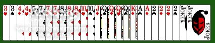
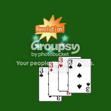
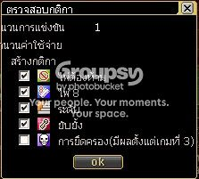
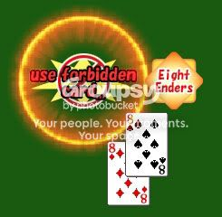
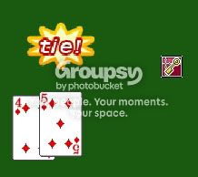

วิธีไป Titania Equipment
ไปที่ Tiny Island คุยกับ Rainbow Machine (เงื่อนไข :: ค่าชื่อเสียง 10 ขึ้นไป)


เลือก "อยากไป!"
เราก็จะมาถึงเมือง Titania Equipment

วิธีไป Welcome Center
ไปยังจุดที่วงกลมไว้

เมื่อมาถึง ให้เดินทะลุเข้าไปได้เลย

จะมาถึง Welcome Center

วิธีไป Attraction Zone
Attractione Zone จะอยู่ห้องบนสุดของแมพ

วิธีการเข้าเล่น มินิเกม
คุยกับ NPC Dealer

เลือก เล่นมินิเกม

เลือกห้องที่ท่านต้องการเข้า


เมื่อผู้เล่นที่เป็นคนตั้งมินิเกมกดเริ่มเกมก็จะเข้าสู่เกมการเล่น
ผู้เล่นกด ตกลง เพื่อยืนยันการเล่นของตัวเองได้เลย
กติกาเกมเล่นไพ่ DaeBuho
วิธีการเล่นเกม
ไพ่หนึ่งสำรับจะมีทั้งหมด 54 ใบ แต่จะมีโจกเกอร์อยู่ 2 ใบ เกมจะเริ่มเมื่อทำการแจกไพ่ เจ้ามือจะทำการแจกไพ่ให้ตัวเองและผู้เล่นคนอื่นๆ ก็จะเปิดตาม
เกมนี้จะเรียงลำดับแต้ม สูง ต่ำ จาก ต่ำ ไปหา สูง ดังนี้ (3 4 5 6 7 8 9 10 J Q K A 2 Joker)
ผู้เล่นคนต่อไปจะต้องเปิดไพ่มีแต้มสูงกว่าคนก่อนหน้านี้
ในกรณีที่ยังไม่อยากเปิดไพ่ของตัวเอง สามารถขอผ่านตานี้ไปก่อนได้
ข้อควรระวัง ถ้าผู้เล่นไม่เปิดไพ่ภายใน 1 นาที จะถือว่าขอผ่านตานี้ไปโดยอัตโนมัติ
และถ้าเกิดแบบนี้ครบ 3 ครั้ง ก็จะถูกตัดออกจากมินิเกมโดยอัตโนมัติ ควรระวังเรื่องนี้เอาไว้ให้ดี
เจ้ามือสามารถรวบไพ่แล้ววางทีเดียวหลายๆ ใบ ได้ เช่น ( 7 7 ) , (3 3 3)
ในกรณีที่มีไพ่หลายใบ จะต้องวางไพ่ที่มีแต้มสูงกว่าลงไป (7 7 > 9 9 > K K)
ทำอย่างนี้ไปเรื่อยๆ ใครไพ่หมดก่อนก็จะเป็นฝ่ายชนะ
ผู้ชนะจะได้ตำแหน่ง Great Rich
Richer
Commoner
Poor
Great poor
และจะได้ระดับตามที่กล่าวมาตามลำดับ (ถ้าผู้เล่นมีมากกว่า 5 คน ก็จะเพิ่มระดับ Commoner เข้ามา)
หลังจากที่จัดอันดับแล้ว ผู้เล่นที่ได้แต้มต่ำสุด กับผู้เล่นที่ได้แต้มสูงสุด จะแลกไพ่ที่ดีที่สุดกับ ไพ่ที่แย่ที่สุด ให้แก่กัน
ขั้นตอนการแลกเปลี่ยนไพ่
Great Rich จะมอบไพ่แต้มต่ำสุดให้กับ Great poor 2 ใบ
Great poor จะมอบไพ่แต้มสูงสุดให้กับ Great rich 2 ใบ
Richer จะมอบไพ่แต้มต่ำสุดให้กับ Poor 1 ใบ
Poor จะมอบไพ่แต้มสูงสุดให้กับ Richer 1 ใบ
หลังจากจัดอันดับแล้ว เกมเริ่มใหม่อีกครั้ง ผู้เล่นที่มีอันดับต่ำสุดจะได้เป็นคนเริ่มเกมก่อน
กติกาการตัดสิน
ผู้ที่เริ่มเกมก่อนจะได้กลายเป็นเจ้าของห้องมินิเกม
เกี่ยวกับ Joker
เกมนี้ Joker มีแต้มสูงสุดโดยไม่มีเงื่อนไข สามารถเปลี่ยนไปเป็นจำนวนอื่นๆ ได้ทุกใบ
เกี่ยวกับ Revolution
ถ้าไพ่เหมือนกัน 4 ใบ จะกลายเป็น Revolution หากมีคนลงไพ่ Revolution แล้ว
ตาต่อไปที่เดินก็จะสลับจากมากเป็นน้อยทันที คือจะมี 2 เป็นไพ่ที่มีจำนวนน้อยสุด และมี 3 เป็นไพ่ที่มีจำนวนมากที่สุดแทน
และผลของ Revolution นี้ จะมีผลอยู่ไปตลอดจบจบเกมหรือต่อเมื่อมีคนลงไพ่ Revolution มาแก้อาการคืน
ถ้ามีคนลงไพ่ Revolution ซ้ำเป็นครั้งที่ 2 ไพ่ก็จะทำให้ค่าสูงต่ำกลับมาสู่สภาพปกติคือมี 2 เป็นไพ่ที่มีแต้มสูงสุด และ 3 เป็นไพ่ที่แต้มน้อยสุด
กติกาพิเศษ
ไพ่ต้องห้าม
กติกานี้หมายถึง
2/3/(Revolution)/8/Joker จะต้องไม่วางไพ่พวกนี้เป็นไพ่ใบสุดท้าย
ผู้เล่นที่วางไพ่เหล่านี้เป็นใบสุดท้าย จะได้กลายเป็นอยู่อันดับท้ายสุดแทน
ถ้าทำการ Revolution แล้ว วางไพ่ 2 เป็นใบสุดท้ายก็จะไม่เกิดผลอะไร
แต่ถ้าไม่กดเลือกไพ่ต้องห้ามกติกาเหล่านี้ก็จะไม่เป็นผล
ไพ่ 8
กติกานี้หมายถึง ถ้าวางไพ่ 8 หนึ่งใบ หรือ วางไพ่ 8 มากกว่านั้นก็จะสามารถจบตานี้ได้เลย
(จบตาที่เดินไม่ใช่จบเกมชนะ)
ง่ายๆ คือผู้เล่นที่วางไพ่ 8 จะกลายเป็นคนเริ่มเกมในตาต่อไป
เสตรท
กติกานี้หมายถึง สามารถวางไพ่ 3 ใบ ในคราวเดียวกัน
ซึ่งในกรณีที่วางพร้อมกันนั้น ไพ่จะต้องเรียงลำดับกัน
ตัวอย่าง ( 8/9/10 หรือ J/Q/K)
ในกรณีที่มีเสตรท 4 ใบ สามารถเริ่ม Revolution ได้
และถ้ามี 8 อยู่ในเสตรทจะถือว่าไพ่ 8 เป็นโมฆะในการเป็นไพ่จบตานั้นได้ไป
ความซื่อตรง
กติกานี้หมายถึง ในกรณีที่วางไพ่เหมือนกันติดต่อกัน ต้องวางไพ่ที่ถูกต้องเท่านั้น
เช่น มีคนลง ไพ่โพธิ์ดำ 4 คนต่อไปลง ไพ่โพธิ์ดำ 6 ซึ่งเป็นไพ่โพธิ์ดำเหมือนกันทำให้คนต่อไปที่จะลง
ก็ต้องวางไพ่โพธิ์ดำที่มากกว่า 6 เท่านั้น ทำไปเรื่อยๆ จนกว่าจะจบตานั้น
กติกาของเสตนทสามารถเอามารวมใช้กับกติกาความซื่อตรงนี้ได้เช่นกัน
เช่น ไพ่ดอกจิก 4 ดอกจิก 5 ดอกจิก 6 มีคนลงไพ่ ดอกจิก 8 ดอกจิก 9 ดอกจิก 10
ทำให้คนต่อไปที่ลงก็จะต้องลงเสตรท 3 ใบเป็นไพ่ดอกจิกเท่านั้น
ช่อง Poor
กติกานนี้หมายถึงผู้เล่นที่กลายเป็น Great Richer ในการเล่นครั้งแรกห้ามเล่นแพ้ในเกมต่อไปเป็นอันขาด
ถ้าเกิดมีคนชนะในตาต่อไป
ผู้เล่นที่เป็น Great Richer จะแพ้กลายเป็น Great poor ทันที และไม่สามารถวางไพ่ต่อไปได้ในตานั้น

กฎพื้นฐาน
*- จำนวนการแข่งขัน
1 รอบ ใช้ 1 ecion
3 รอบ ใช้ 3 ecion
5 รอบ ใช้ 50 ecion
10 รอบ ใช้ 500 ecion
*- ค่าของไพ่ เรียงจากซ้ายไปขวา

*- ไพ่ค่ามากกว่าชนะไพ่น้อยกว่า
*- วน1รอบ หากเป็นไพ่ของตัวเองไม่ถูกไพ่คนอื่นวางทับ จะได้สิทธิ์วางไพ่ใบใดก็ได้
*- Joker วางเดี่ยว จะได้สิทธิ์วางไพ่ใบใดก็ได้
*- Joker ใช้แทนไพ่ใบใดก็ได้ (เช่น 3♣ + 3♥ + 3♦ + Joker)
*- วางไพ่ 4ใบพร้อมกัน จะทำให้เกิดผล Revise Now! ค่าของไพ่มากสุดจะไปอยู่ซ้าย น้อยสุดอยู่ขวา (Joker เป็นไพ่สูงสุด เหมือนเดิม)

v สัญลักษณ์ขณะ Revise Now!
*- รอบที่ 2 เป็นต้นไป
Great Rich นำไพ่ต่ำสุดให้กับ Great poor 2 ใบ
Richer นำไพ่ต่ำสุดให้กับ Poor 1 ใบ
Poor นำไพ่แต้มสูงสุดให้กับ Richer 1 ใบ
Great poor นำไพ่สูงสุดให้กับ Great rich 2 ใบ
*- ที่โหล่ จะได้สิทธิ์เริ่มก่อนในรอบถัดไป
“♫♫::♫♫ ►_______________________◄♫♫::♫♫ ”

ไพ่ต้องห้าม
- ห้ามวางไพ่ 2 หรือ Joker เป็นใบสุดท้าย (กรณีมีกฎ "ไพ่ 8" ก็ห้ามวางไพ่ 8 เป็นใบสุดท้ายเช่นกัน) หากวางเป็นใบสุดท้ายจะปรับแพ้
- ขณะ Revise Now! ไพ่ 3 จะเป็นไพ่ต้องห้ามแทน 2

ไพ่ 8
- ไพ่ 8 เมื่อวางได้ จะได้สิทธิ์ วางไพ่ใบใดก็ได้
ระดับ
- วางไพ่ เรียง 3-4 ใบ หน้าเหมือนกัน (เช่น 3♥ + 4♥ + 5♥)
ยับยั้ง
- วางไพ่หน้าเหมืองกัน (เช่น ไพ่♦ -> ไพ่♦ คนถัดไปจะต้องวาง ♦)

การยึดครอง(มีผลตั้งแต่เกมที่ 3)
- คนชนะGreat Rich ในรอบก่อน ถ้าถูกคนอื่นชิง Great Rich ไป จะกลายเป็น Great poor ทันที
v สัญลักษณ์ที่ 1
ขอบคุณ วิธีการเล่นของคุณ Hix และวิธีไปบ่อนไพ่ของน้องแคร์ นะครับ